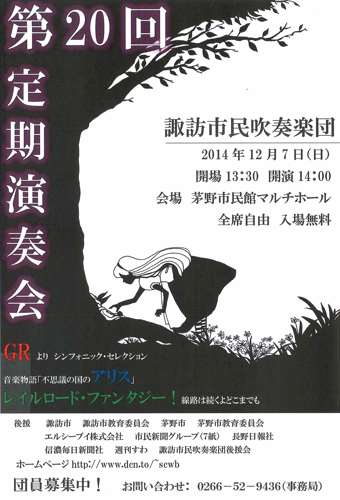

コンサート報告（2014年）
2025年 ｜
2024年 ｜
2023年 ｜
2022年
2021年 ｜
2020年 ｜
2019年 ｜
2018年 ｜
2017年
2016年 ｜
2015年 ｜
2014年 ｜
2013年 ｜
2012年
2011年 ｜
2010年 ｜
2009年 ｜
2008年 ｜
2007年
2006年 ｜
2005年 ｜
2004年 ｜
2003年 ｜
2002年
アイスキャンドル点灯式出演 演奏終了（2014.2.1）
諏訪の冬を彩るイベント「アイスキャンドル」の点灯式出演も恒例になってきました。本年も当団トランペットパートが出演、ファンファーレは上諏訪中学校吹奏楽部の皆さんと合同で演奏し、イベント開幕を飾ることができました。多くの皆さんに聞いていただき、誠にありがとうございました。
ひなどり保育園チャリティーコンサート 演奏終了（2014.2.2）
同保育園移改築資金集めのためのチャリティーコンサート。当団としては出演しませんでしたが、当日の吹奏楽演奏のための臨時編成“ひなどり楽団”に団メンバーが多数出演しました。親子連れが多かったのですが、お子さんがきちんと聞いていたのが印象的でした。多くの皆様のご協力に心から御礼申し上げます。
デイサービス湯の里慰問演奏 演奏終了（2014.4.29）
諏訪市四賀にある同センターで、初めて演奏しました。多くのお年寄りの皆さんに熱心に聞いていただき、アンコールが３曲もかかる盛り上がりを見せました。「また来てね」との声をたくさんいただき、私たちも大変嬉しかったです。ありがとうございました。
並木DEコンサート 演奏終了（2014.5.24）
諏訪市の柳並公園で毎月第4土曜日に開催される「並木DEコンサート」の今年度初回に演奏させていただきました。例年よりも暖かく、天候にも恵まれて非常に多くのお客様にご来場いただき、私たちも楽しく演奏することができました。ありがとうございました。
第20回演奏会へ！フラッシュモブ Part 1 演奏終了（2014.6.29）
第20回定期演奏会に向けたPR活動の一環として、当団として初のフラッシュモブをアピタ岡谷店店内で実施しました。11時と12時の2回実施しましたが、いずれも予想以上のお客様に聞いていただき、私たちとしても敢行した甲斐がありました。この活動は今後も実施を予定しています。諏訪圏内のどこでやるかわかりませんが、ぜひご期待ください。
当日の演奏の様子はこちらにアップされています。ぜひご覧ください。
また、快く会場をお貸しいただいたアピタ岡谷店の皆様に、厚く御礼申し上げます。ありがとうございました。
聖母寮 慰問演奏 演奏終了（2014.7.26）
夏の聖母寮訪問も9回目を迎えました。今回も温かく歓迎していただき、大変うれしく思います。今回は聖母寮さんの方から「青い山脈」をやってほしいとのリクエストをいただき、演奏したところ会場が大合唱に包まれ、私たちも感激しました。今後ともよろしくお願いします。
諏訪湖音楽の夕べ 演奏終了（2014.8.7）
8月の夕方、諏訪湖音楽堂で開催されている「諏訪湖音楽の夕べ」は28回の歴史を誇るイベントですが、当団としては初めて出演しました。天候にも恵まれ、観光客の方や地元の方に囲まれて楽しく演奏することができました。予想以上の盛り上がりに、参加して良かったと心から思いました。ありがとうございました。
老人ホームアイリス 敬老会出演 演奏終了（2014.9.14）
原村の同施設での演奏も本年で5年連続となり、すっかり恒例になってきました。100歳を超える長寿のお客様もいらっしゃる中、楽しく演奏できました。歓迎いただき、ありがとうございました。
第20回 上社の杜音楽祭 中止（2014.10.5）
諏訪湖博物館前の広場で開催される「上社の杜音楽祭」ですが、台風の接近に伴う雨と風のため、やむを得ず中止となりました。少雨であればテント内などを利用して演奏が可能なのですが、それも無理との判断によるものです。20年の歴史で初の中止となってしまいました。
合同演奏の練習も重ねており、私たちとしても大変残念に思っております。今後もより良いイベントになるよう、努力していきたいと思います。
第20回演奏会へ！フラッシュモブ Part 2 演奏終了（2014.11.8）
6月に岡谷で実施したフラッシュモブを、今回は定期演奏会会場にほど近い、オギノ茅野ショッピングセンターで実施しました（10:30と11:30の２回）。今回は規模が大きくなったこともあり、「フラッシュモブ」と言うにはやや偶発性が不足していた感じもありますが、お買い物中の多くのお客様にお聞きいただき、定期演奏会をアピールできたと思います。足を止めていただき、誠にありがとうございました。
また、快く会場をお貸しいただいたオギノ茅野ショッピングセンターの皆様に、厚く御礼申し上げます。ありがとうございました。
第20回 定期演奏会 演奏終了（2014.12.7）
 記念すべき20回目の定期演奏会を、多くの皆様のご協力の下に開催することができました。寒い日ではありましたが、当日は過去最多の560名のお客様においでいただきました。心より御礼申し上げます。
内容も、大曲あり、音楽物語あり、フラッシュモブを再現した演奏ありと欲張ってみました。さらに、開演前には箕輪中学校吹奏楽部の皆さんによるアンサンブル演奏、第2部冒頭には打楽器パフォーマンス集団JUGGBEATの皆さんに特別出演していただきました。ご来場の皆様に楽しんでいただけたなら、これに勝る喜びはありません。
20回の節目を終え、これからも努力を重ねて楽しい演奏をお届けしていきたいと思います。改めて御礼申し上げますとともに、今後とも諏訪市民吹奏楽団を、どうぞよろしくお願いいたします。ありがとうございました。